A gate excludes, a limit caps, a condition escalates, and a person decides.
The problem
One private-credit deal may need to be allocated across several funds and mandates, where every cap, exclusion and escalation must be explainable to a checker, Compliance and an auditor.
What it does
Eligibility gates lead to limits, including pre-trade BDC headroom; sizing uses a documented key, minimum ticket and lots; co-investment conditions can escalate; a maker-checker approves; then the deal is booked, reconciled across three records and monitored through surveillance.
Every step writes to a hash-chained audit log, and one command produces the evidence pack an auditor would ask for.

One decision, end to end (deal D008, fund F2)
| Step | What happened |
|---|---|
| Input | D008 Summit Logistics is a $300m first lien, rated BB; F2 has 82 of capital free and plans to fund the deal with debt. |
| Rules | Eligibility gates pass. The issuer limit and pre-trade BDC check set the binding limits under stated assumptions. |
| Calculation | Capacity = min(free capital 82, issuer room 125) = 82. The debt case allows 57.71, rounded down to 57.5; the cash case allows 40.0. A 60.07 key share is capped at 57.5 and the 2.5 excess is re-split. |
| Outcome | F2 receives 57.5 and stays at 70.006% qualifying assets; at 60 it would be 69.94%. Critical exception E0009 goes to the CCO / board. |
| Human action | A checker other than the maker approves with a recorded rationale; unknown funding cannot be cleared by rationale. |
| Audit evidence | RUN_CREATED → SUBMITTED → APPROVED → BOOKED → RECONCILED; each entry is hash-chained, booked 57.5 equals ledger 57.5, and the chain verifies. |
What the runs show
| Case | Deal | What was tested | Result |
|---|---|---|---|
| 1 | D003 Atlas ($400m) | Concentration and existing-investment condition | F1:F2 rebalanced to 72:28; board-step exceptions cleared; a $0.5m ledger break was caught and resolved. |
| 2 | D009 Crescent ($220m) | Restricted issuer for one mandate | F5 excluded; the other five funds allocated; zero reconciliation breaks. |
| 3 | D007 Bluebell ($110m) | Missing rating and sourced correction | Run blocked, then corrected with a reason and owner; approved, booked and reconciled with zero breaks. |
| 4 | D008 Summit ($300m) | Funding-aware BDC pre-trade cap | F2 capped at 57.5 and stays at 70.006%; cash limit 40.0; the earlier 60 allocation reached 69.94%. |
| 5 | D010 Meridian ($75m) | Follow-the-sun handover with a pending reservation | $58.5m under-subscribed, raised as a Medium exception. |
| 6 | D013 Orion ($120m) | Concurrent reservations and unknown funding | F2 has zero permitted headroom; F1’s unknown funding raises a High exception to Compliance and approval stays on hold until funding is confirmed. |
Design choices
Pre-trade headroom follows the deal funding plan and stated balance-sheet assumptions.
Capital and headroom held by pending runs cannot be reused by another run.
Source-backed corrections are logged with a reason; input data is never silently edited.
The person who creates a run cannot approve that run.
Checks and limits
The README reports 89 pytest tests; the findings explain that each reported figure is printed by the demo and asserted in report tests. BDC checks are a model under stated assumptions, policies are illustrative, and Legal/Compliance would need to review the classification and calculation basis before real use. This is not a production system.
Evidence
Walkthrough · Findings · Decision path · Runbook
Sample traces: D009 exclusion · D008 allocation · D013 hard stop.
Synthetic case study. All data is synthetic and all policies are illustrative, modelled on public information. Not based on, or connected to, any firm's systems, data or processes.